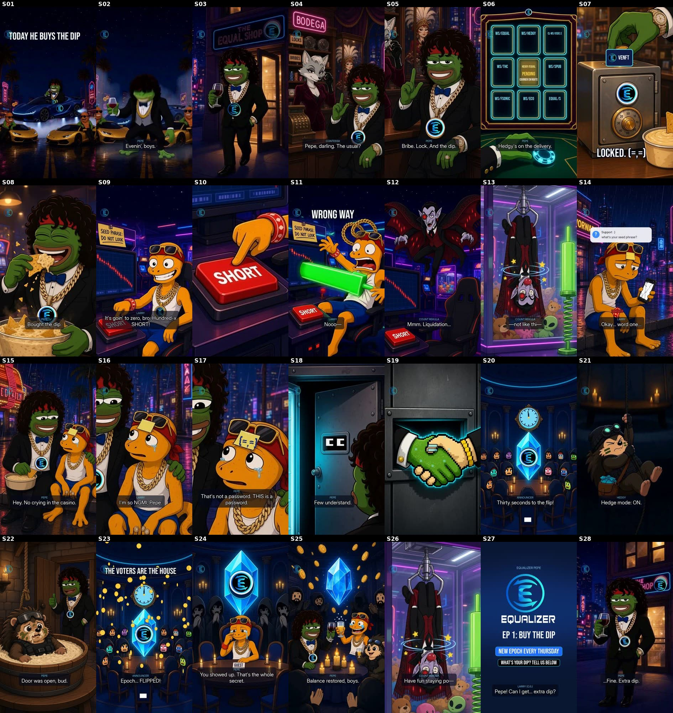

EQ · Ep 1 “Buy the Dip”
FULL PREVIEW (animatic tier) · 9:16 · 63.2s · 28 shots · closed loop · updated 23 Oct 2026 AEDT: lead renamed EQ
What this is
- Lead character is now EQ (said “E Q”). Re-voiced: Contessa “EQ, darling. The usual?”, Larry “I'm so NGMI, EQ.”, Larry “EQ! Can I get… extra dip?”. Subtitle labels, end card eyebrow and notes updated.
- Animatic-grade preview: most shots are stills with camera moves, coded props and subtitles; 4 short motion clips.
- Voices: saved EQPepe voices — EQ (EQPepe-CoolCat), Contessa, Larry, Rekula, Announcer, Hedgy.
- Mix: −14.5 LUFS, −1.3 dBTP, AAC 192k / 48 kHz; music ducked ~10 dB; one Thursday DING, da-da DING at payoff + end card; glass clink on the loop seam.
- Runs ~63s, not ~56s (the EQ lines are slightly longer than the old Pepe lines). The Kling/Wan final-tier rebuild (~58.8s) is at eq-ep1-dip-kling.
- “Bribe the decks” is read as the vote-page bribe board — not yet confirmed with Blake.
- No lip-sync: talking shots are camera moves + subtitles.
Weak shots (cheap redo candidates)
- S19 handshake: a regular handshake with an “=” sparkle on top.
- S01–S02 motion A: EQ goes off-model late (red glasses, medallion lost).
- S28 reuses motion D (strut).
- S13/S26 Rekula claw: still with shake/yank only.
Contact sheet

Shot list
| S01 | 0.00s | 1.50s | MOTION A |
| S02 | 1.50s | 1.75s | MOTION A |
| S03 | 3.25s | 1.60s | MOTION D |
| S04 | 4.85s | 2.35s | animatic / coded |
| S05 | 7.20s | 3.05s | animatic / coded |
| S06 | 10.25s | 1.75s | animatic / coded |
| S07 | 12.00s | 1.75s | animatic / coded |
| S08 | 13.75s | 1.60s | animatic / coded |
| S09 | 15.35s | 2.75s | animatic / coded |
| S10 | 18.10s | 0.90s | animatic / coded |
| S11 | 19.00s | 2.50s | MOTION B (reused test) |
| S12 | 21.50s | 2.62s | animatic / coded |
| S13 | 24.12s | 1.30s | animatic / coded |
| S14 | 25.42s | 3.55s | animatic / coded |
| S15 | 28.97s | 2.45s | animatic / coded |
| S16 | 31.42s | 2.75s | animatic / coded |
| S17 | 34.17s | 3.15s | animatic / coded |
| S18 | 37.32s | 1.95s | animatic / coded |
| S19 | 39.27s | 1.35s | animatic / coded |
| S20 | 40.62s | 2.15s | animatic / coded |
| S21 | 42.77s | 1.85s | MOTION C |
| S22 | 44.62s | 3.95s | MOTION C → still |
| S23 | 48.57s | 2.05s | animatic / coded |
| S24 | 50.62s | 4.05s | animatic / coded |
| S25 | 54.67s | 1.60s | animatic / coded |
| S26 | 56.27s | 1.55s | animatic / coded |
| S27 | 57.82s | 2.60s | animatic / coded |
| S28 | 60.42s | 2.75s | MOTION D |